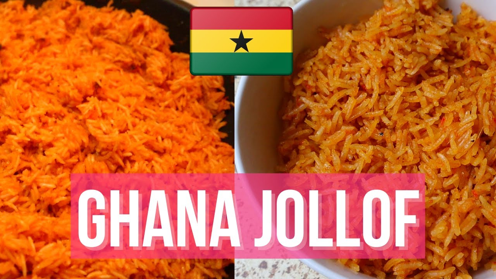

Ingredients
- 6 large tomatoes
- 4 large onions
- 6 cloves of pressed garlic
- 2 chillies (optional)
- 2 tablespoons of tomato paste
- vegetable oil
- 500g of beef, chicken or lamb (alt: mixed vegetables)
- 800g long grain rice
- 1,5 litres of water or stock (± 1 stock cube, depending on how much meat is used)
- 1 teaspoon each of ground white and black pepper
PREPARATION
- Put tomatoes into the blender and set aside. Then, in a non-stick pot, fry pre-cooked meat in oil. When these have browned, remove and set aside.
- Add onions and fry until soft before adding garlic and blended tomatoes. Add meat stock and/or stock cube(s), tomato paste, ground white and black pepper and stir. Remember to season strongly because rice will later be added to this sauce.
- Cook for ± 10 minutes on medium heat before adding rice. Stir and mix well before covering. Cook on low heat for ± 20 minutes. Add vegetables and mix well. Add about 1 cup more of water and continue to cook on low heat until rice is done.
return to main page